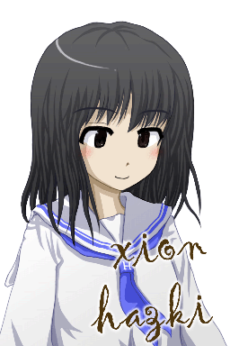
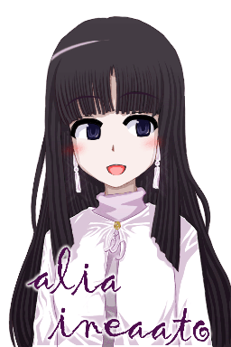

|
인물소개

하즈키 시온(初月紫苑, xion hazki)
17세, 고등학교 2학년.
언젠가 이세계에 소환되는 것을 꿈꾸던 소녀.
아톨라스에 소환되어 레인들을 만나 아르카를 배운다.
성격은 꼼꼼하고 내성적. 지구의 친구는 적다.
특기는 합기도와 검도. 좋아하는 것은 메밀국수와 당근. 가슴 사이즈는 보통.
이상형은 지적이고 섬세한 연상의 남성. 꽃가루 알레르기가 고민거리.

레인 유티아(lein yutia)
16세, 전기 아르나대학 학생. 1반인 리디아반 소속.
중앙아르나시(市) 네르메스-리디아가(街)에 거주.
지구에서 온 시온이 목숨을 구해 줘서 아르카를 가르치게 된다.
성격은 차분하고 천진난만하다. 부끄럼을 잘 타서 친구는 적다.
특기는 집안일과 어학. 운동을 잘 못한다. 좋아하는 것은 고양이. 빈유.
이상형은 상냥한 오빠 같은 남성. 유아체형인 게 고민.

알리아 이네아토(alia ineaato)
17세, 전기 아르나대학 학생. 8반인 랄두라반 소속.
중앙아르나시 포엔-풀미아가에 거주.
레인의 동급생이며 유서깊은 점술사 집안.
성격은 보기와는 달리 당차다. 남을 놀리는 것이 취미.
특기는 예지와 예언. 그림을 못 그린다. 술이 세다. 가슴은 크다.
이상형은 작고 귀여운 여자아이. 키가 큰 것이 고민.

아르셰 알템스(arxe alteems)
25세, 마법연구소원. 전공은 언어학.
중앙아르나시 티텔-리디아가에 거주.
소환성(召喚省)의 관리 하인 알템스의 아들.
성격은 온화하고 신사적. OB로서 자주 아르나대생을 돌봐주고 있다.
특기는 유벨(아르바자드의 격투기). 직선적이며 이치에 맞지 않는 것을 싫어한다.
이상형은 굳세고 씩씩한 아이. 아버지가 너무 위대한 것이 고민.
|